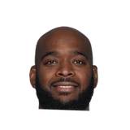
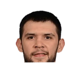

“I really respected Kevin McHale. I wish I would have had an opportunity to play for him longer. The things he was teaching me, well, I didn't understand right away. When you get away from someone, though, see it from the outside looking in, you go back and think, 'Damn, I could've learned some more things from the guy.'”
What NBA players and coaches have said about Kevin McHale
28 quotes about Kevin McHale from 17 players, coaches and executives, newest first. Each one links to its original source.
Best quotes
Klay Thompson:
“To look at us three and think that we've won championships in the same realm as guys like McHale, Bird and Parish or Manu, Tim and Tony... Hopefully, Steph, Klay and Dray will leave a legacy like theydid.”
KC Johnson:Fred Hoiberg:
“Kevin McHale is as good as I’ve played for. He’s a great person, a relationship guy who is so good at getting the guys to believe”
What Kevin McHale has said about other players and coaches →
Quotes per season
Who talks about Kevin McHale most
- Leslie Alexander on Kevin McHale4 quotes
 Chandler Parsons on Kevin McHale3 quotes
Chandler Parsons on Kevin McHale3 quotes Daryl Morey on Kevin McHale3 quotes
Daryl Morey on Kevin McHale3 quotes Doc Rivers on Kevin McHale3 quotes
Doc Rivers on Kevin McHale3 quotes- Byron Scott on Kevin McHale2 quotes
 Fred Hoiberg on Kevin McHale2 quotes
Fred Hoiberg on Kevin McHale2 quotes- Brett Brown1 quote
 Corey Brewer1 quote
Corey Brewer1 quote Danny Ainge1 quote
Danny Ainge1 quote Dwight Howard1 quote
Dwight Howard1 quote Jeremy Lin1 quote
Jeremy Lin1 quote
Josh Powell1 quote
Back and forth
- Kevin McHale and Dwight Howard5 quotes
- Kevin McHale and Daryl Morey4 quotes
- Kevin McHale and Byron Scott3 quotes
- Kevin McHale and Jeremy Lin2 quotes
2023-24
2 quotes“With McHale, he would just sit there all day and talk to you. Just talk about spacing and about the game and I played golf with him last year and he had a whole crowd around him…he’s a special human being.”
Klay Thompson:
“To look at us three and think that we've won championships in the same realm as guys like McHale, Bird and Parish or Manu, Tim and Tony... Hopefully, Steph, Klay and Dray will leave a legacy like theydid.”
2017-18
1 quoteDoc Rivers:
“Kevin McHale had that comment. ‘If I had the knowledge now but my body at 22, I would have been the greatest player of all time.’ LeBron has the knowledge of all those years and he’s still top two, three athletic in the league.”
2015-16
7 quotesAinge, the Celtics’ president of basketball operations, spoke about the importance of trust in what was the biggest trade he has pulled off to date – landing Kevin Garnett from Minnesota in 2007.
“The biggest trade we made was with my best friend in the business, Kevin McHale,”
Morey on looking back at McHale’s firing:
“Yes. That’s how you learn. … You learn from looking back at that decision and thinking through what’s right, what’s wrong. I feel confident we made the right choice. But I also understand that reasonable people tend to look at it other ways.”
Christopher A. Vito:Sixers coach Brett Brown on Kevin McHale:
“It's highly disappointing and sad that a conclusion like that could be reached after 11 games.”
Jenny Dial Creech:Corey Brewer on McHale:
“I didn’t see it coming, I’m not going to lie. Me and McHale are really close so it was tough to hear it.”
Jason Quick:Morey on McHale firing:
“It's not just 4-7. It's the way we are losing ... How the team is not responding.”
Jason Quick:Rockets GM Morey:
“Team was not responding to Kevin McHale. We had to make tough call. There is no time to wait in the Western Conference”
KC Johnson:Fred Hoiberg:
“Kevin McHale is as good as I’ve played for. He’s a great person, a relationship guy who is so good at getting the guys to believe”
2014-15
12 quotesMark Berman:Doc Rivers on Kevin McHale:
“He's a heck of a coach. They needed to improve defensively and they did it without their best defensive player”
Doc Rivers:
“Kevin [McHale] and I have the truce going of it will be the ‘no hack-a-series’ or it will be ‘all-hack-a-series.’”
Calvin Watkins:Dwight Howard on Kevin McHale finishing 6th for COY:
“He’s done an excellent job this year, his work and our work is not complete ...”
Mark Berman:Chandler Parsons on Kevin McHale's recent texts:
“He sent me a picture of the NBA InsideStuff thing I did w/the cowboy hat just hating on me”
Mark Berman:Chandler Parsons on Kevin McHale:
“He'll always be a friend to me. He wasn't just a coach. He's a mentor. He's almost a father-figure to me”
Mark Berman:Chandler Parsons on his response to Kevin McHale's trash-talking texts:
“I don't think my answer was appropriate enough to tell you guys (smiling)”
Baxter Holmes:Ex-LAL Scott on ex-Celtic McHale:
“We won’t be going to dinner or nothing, but he’s all right.”
Mark Berman:Owner Leslie Alexander on Kevin McHale's extension:
“I didn't want to let anybody else have a chance to get him if he was a free agent.”
Mark Berman:Leslie Alexander on extending Kevin McHale N final year of deal:
“I don't think he'd leave, but just N case. He's perfect 4 the team so why not now”
“I don’t ever question what God has in store. One door closes and another one opens. Coach (Kevin McHale) is being patient with me. Everyone has been real helpful in helping me through the transition process. I look forward to a new chapter and an exciting opportunity.”
Josh Powell on Kevin McHaleHouston Chronicle
Arash Markazi:Scott:
“I'm not going to look at Kevin [McHale] but if he wears a green and white jersey I might have to get my jersey.”
“This was a once in a lifetime opportunity. I didn’t want to miss it. I thought, ‘This is the time.’ I spoke with the GM (Daryl Morey). The coach himself (Kevin McHale) called me. That means a lot to a player. But I just didn’t want to be stupid and lose this opportunity to be here, to live this dream to go to the NBA.”

Kostas Papanikolaou on Kevin McHale, Daryl MoreyHouston Chronicle2013-14
3 quotes“I really respected Kevin McHale. I wish I would have had an opportunity to play for him longer. The things he was teaching me, well, I didn't understand right away. When you get away from someone, though, see it from the outside looking in, you go back and think, 'Damn, I could've learned some more things from the guy.'”
Your two most popular summer comparisons have been McHale and childhood idol Dirk Nowitzki.
“To be compared to [McHale], man, that's a pretty good comparison, just to be in the same sentence with a guy like that,”
Mark Berman:Omri Casspi on chance to play 4 Kevin McHale:
“Very special 2 work w/ somebody who has been in our situation. Just excited 4 the opportunity”
2012-13
2 quotesMark Berman:Leslie Alexander on Kevin McHale:
“He has a great way w/the players. He's always honest & never backs down, but he has no ego in that regard”
“He's our leader. He's our voice. But coach Sampson did a good job coming in, and we played hard. Obviously we can't wait for coach McHale to come back. Everybody around here loves him to death.”
2010-11
1 quoteMost recently, McHale has served as an in-studio analyst for TNT and NBA TV.
“Kevin McHale is a proven NBA champion who has the leadership skills and basketball knowledge necessary to guide our team into the future,”